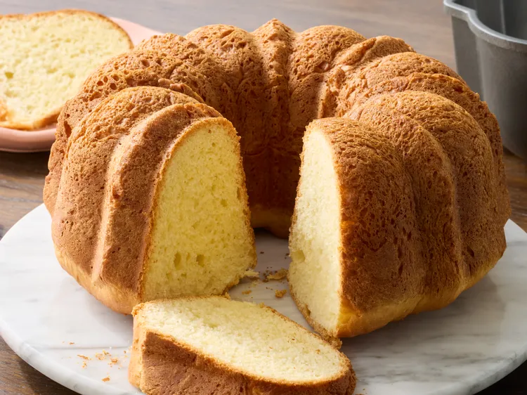
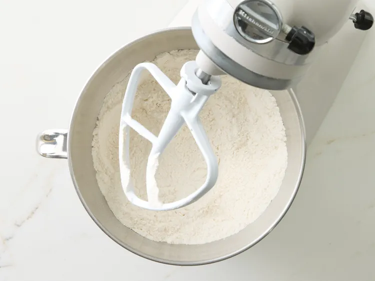
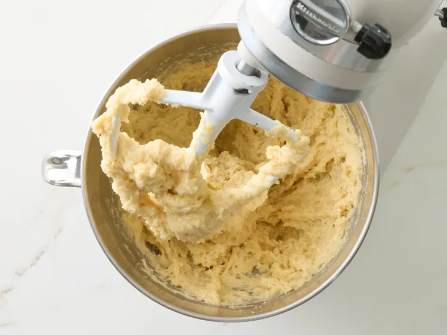
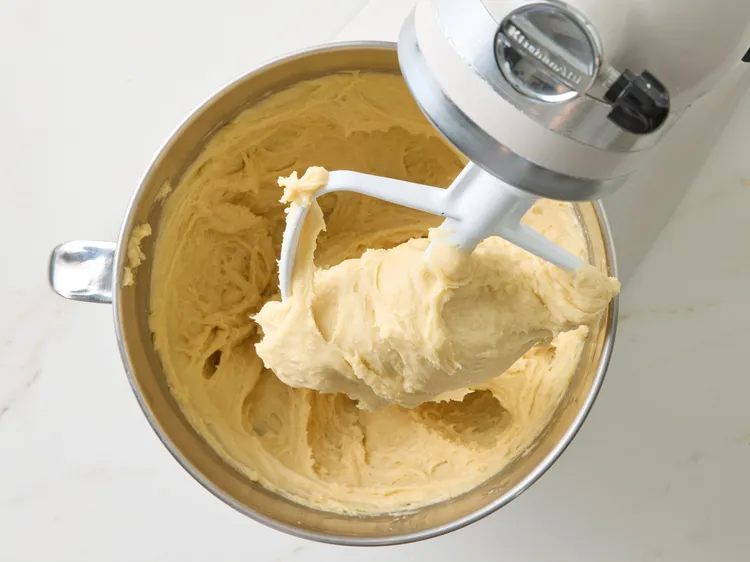
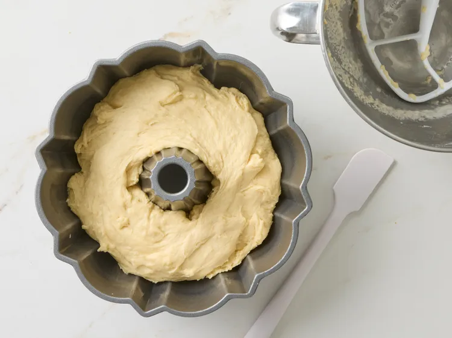
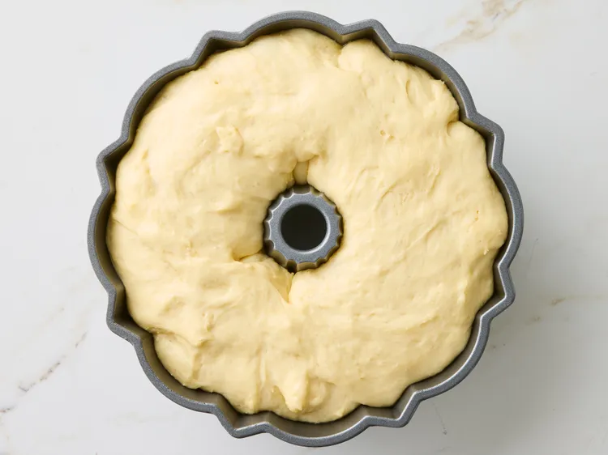
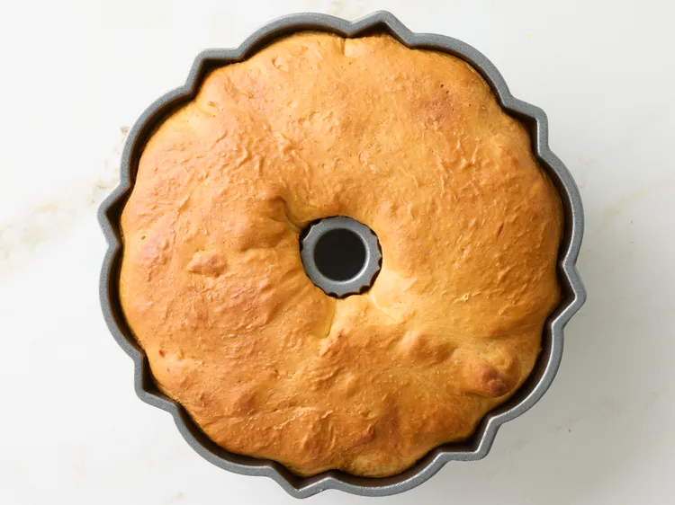
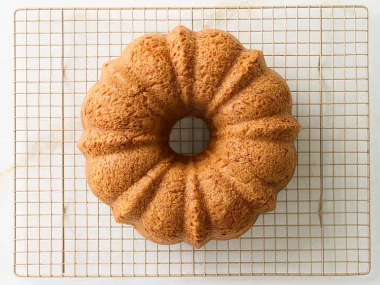

Sally Lunn Cake is a classic, lightly sweet yeast cake from England with a tender crumb and rich buttery flavor. Perfect for breakfast or afternoon tea, this timeless recipe is delicious served warm with butter or enjoyed on its own.
Stir together flour, sugar, yeast, and salt in the bowl of a stand mixer

Mix in milk, butter and eggs just until combined.

Cover with plastic wrap and let rise in a warm place until doubled in size, about 45 minutes to 1 hour.

Grease a 10-cup Bundt pan or fluted cake pan
Return bowl to stand mixer and mix on medium speed to knock air out, about 2 to 3 minutes. Pour batter into the prepared pan.

Cover again and let rise in a warm place until doubled in size, about 45 minutes to 1 hour.

Preheat the oven to 350 degrees F (175 degrees C). Bake until golden brown, 40 to 45 minutes.

Let cake stand in the pan for 5 minutes. Invert onto a wire rack and cool completely before slicing. Serve warm or at room temperature.
